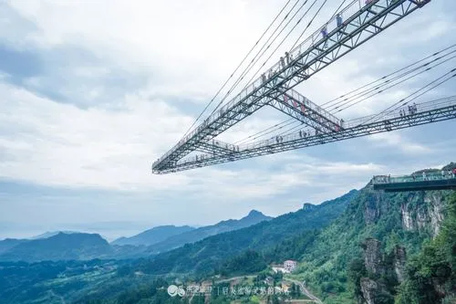

步步惊心
玩的就是心跳！平均间隔30cm的金属钢梁隔空踏板，悬挂于落差150米高空中的临崖边。往下看是万丈深崖，你敢挑战吗？ 步步惊心—速度与激情 “高空跳远效应”的极致体现，100层楼高的高空，间距0.8米-2.5米不等的平台之间高空跳远， 克服心理障碍，你就能在高空“一跳成名”！

玻璃廊桥
成功申请吉尼斯世界纪录：最长的悬挑空中玻璃走廊，悬空于数百米高的悬崖峭壁之上， 沿悬崖向外挑八十多米的空中，故名天空悬廊。廊桥成“A”形，桥面铺设全透明玻璃，从内往外由宽渐窄，站在廊桥最顶端， 不仅让你有一览纵山小的豪气、领略震撼的天空美景，更颠覆你对高空刺激的认知。 悬空于300米高的金牛瀑布之上，悬崖外35米“U”型全透明玻璃走廊。在挑战您胆量的同时， 亦让你完美体验美丽崖景和瀑布飞流直下的震撼场景。
娱乐的乐园
“奥陶纪”是地质年代名称，是古生代的第二个纪（就是原始的脊椎动物出现的时期） 奥陶纪开始于距今4亿年前，根据历史记载：在奥陶纪与志留纪之间隔着一起大规模物种灭绝， 大约有60%的生物灭绝。 如今，为了吸引更多的游客去了解、探秘大自然的力与美，奥陶纪景区斥巨资打造了奥陶纪主题乐园！ 接下来跟随科蜜去找寻奥陶纪的玩法宝典！！！